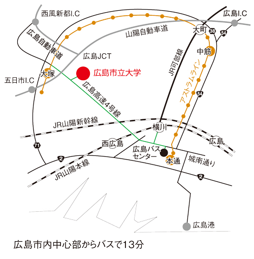

第27回 市大祭
第27回 市大祭広島市立大学
〒731-3194
広島県広島市安佐南区大塚東三丁目4番1号

| JRをご利用の場合 |
「JR広島駅」→ JR山陽本線・可部線(約五分)
|
|---|---|
| 広島バスセンターをご利用の場合 |
「広島バスセンター」2番乗り場 → [64]「くすの木台」方面行きバス(約12分)
|
| アストラムラインをご利用の場合 |
「アストラムライン大塚駅」→ バス停「大塚駅」
|
| 車をご利用の場合 |
市内中心部（紙屋町周辺）から広島高速4号線（西風新都線）経由で約12分
|
※詳しくは大学HPの交通アクセスのページをご覧ください.